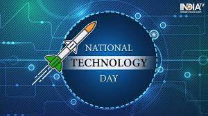

Every year, a new theme is announced on National Technology Day. The events for the day are based on the same theme. The National Technology Day 2023 theme is yet to be announced. Generally, the theme revolves around exploring science and technology concepts. Last year, the National Technology Day 2022 theme was “Integrated Approach in Science and technology for a sustainable future”. This year's theme is expected to be on similar lines.
